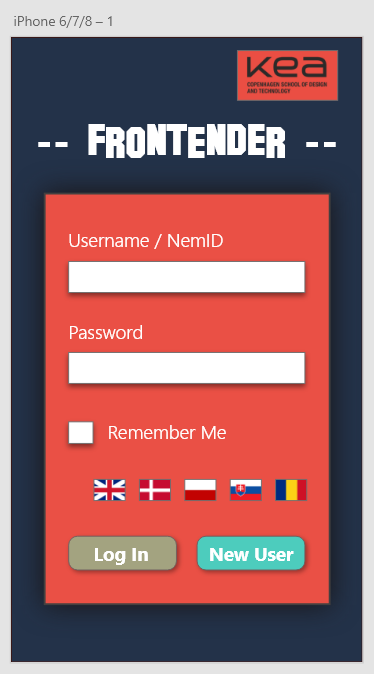
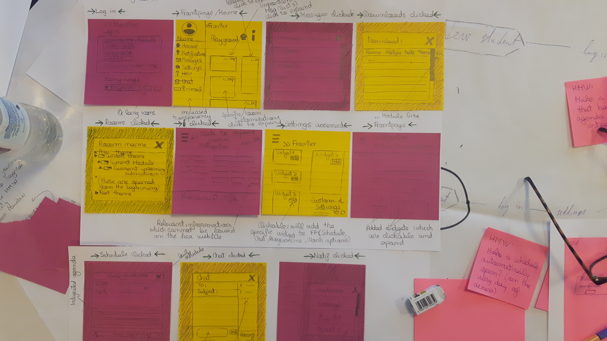

04.02.01 XD Prototype Frontender
Fronter is the platform KEA students use and after a detailed investigation regarding its usability and accessibility several issues have come to surface. So, me and my colleagues teamed up and built the perfect learning platform with a focus on a tailored user experience as our final goal. As a result, FrontEnder has emerged, website which has features that allow user to customize his or her experience on the website containing only relevant information presented in a structured manner, avoiding broken links and outdated pages.
04.03.04 Web Prototype Frontender
After prototyping the learning platform we have come up with, we have coded FrontEnder . I had the chance to learn that even after a Design Sprint, involving such a great brainstorming process with a focus on our best ideas to create the best prototype, FrontEnder still needed improvement after we have conducted the user tests. These tests were very useful for us, as each person is biased so, we have corrected the first prototype and have come up with an improved one which was actually used for creating the website.
04.04.02 Theme Documentation
This theme implied a long process for each task. We basically had to do a Design Sprint that involved us mapping the process with long term goals first, thing which has helped me realize how important it is to define the goals because it influences future decisions. Afterwards, we sketched the app, each with his or her own ideas from which we have chosen the best ones to build the app and last but not least, we prototyped and then tested to ensure the best results are met. Having it all documented ensures that the same steps will be taken in the future and we can compare our future design sprint to our first trials.
